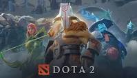

Favorite Games
1. DOTA 2 (Defense of the Ancients 2)
Dota is a series of strategy video games now developed by Valve. The series began in 2003 with the release of Defense of the Ancients (DotA), a fan-developed multiplayer online battle arena (MOBA) mod for the video game Warcraft III: Reign of Chaos and its expansion, The Frozen Throne. The original mod features gameplay centered around two teams of up to five players who assume control of individual characters called "heroes", which must coordinate to destroy the enemy's central base structure called an "Ancient", to win the game. Ownership and development of DotA were passed on multiple times since its initial release until Valve hired the mod's lead designer IceFrog and after an ongoing legal dispute with Blizzard Entertainment, the developer of Warcraft III, brokered a deal that allowed for Valve to inherit the trademark to the Dota name.
2. CSGO (Counter-Strike: Global Offensive)
.jpg) Counter-Strike: Global Offensive (CS:GO) is a 2012 multiplayer tactical first-person shooter developed by Valve and Hidden Path Entertainment. It is the fourth game in the Counter-Strike series. Developed for over two years, Global Offensive was released for OS X, PlayStation 3, Windows, and Xbox 360 in August 2012, and for Linux in 2014. Valve still regularly updates the game, both with smaller balancing patches and larger content additions.
The game pits two teams, Terrorists and Counter-Terrorists, against each other in different objective-based game modes. The most common game modes involve the Terrorists planting a bomb while Counter-Terrorists attempt to stop them, or Counter-Terrorists attempting to rescue hostages that the Terrorists have captured. There are nine official game modes, all of which have distinct characteristics specific to that mode. The game also has matchmaking support that allows players to play on dedicated Valve servers, in addition to community-hosted servers with custom maps and game modes. A battle-royale game-mode, "Danger Zone", was introduced in late 2018.
Counter-Strike: Global Offensive (CS:GO) is a 2012 multiplayer tactical first-person shooter developed by Valve and Hidden Path Entertainment. It is the fourth game in the Counter-Strike series. Developed for over two years, Global Offensive was released for OS X, PlayStation 3, Windows, and Xbox 360 in August 2012, and for Linux in 2014. Valve still regularly updates the game, both with smaller balancing patches and larger content additions.
The game pits two teams, Terrorists and Counter-Terrorists, against each other in different objective-based game modes. The most common game modes involve the Terrorists planting a bomb while Counter-Terrorists attempt to stop them, or Counter-Terrorists attempting to rescue hostages that the Terrorists have captured. There are nine official game modes, all of which have distinct characteristics specific to that mode. The game also has matchmaking support that allows players to play on dedicated Valve servers, in addition to community-hosted servers with custom maps and game modes. A battle-royale game-mode, "Danger Zone", was introduced in late 2018.
3. Rise of the Tomb Raider
Rise of the Tomb Raider is a 2015 action-adventure video game developed by Crystal Dynamics and published by Microsoft Studios and Square Enix's European subsidiary. The game is the eleventh main entry in the Tomb Raider series, the sequel to the 2013's Tomb Raider, and is the second instalment in the Survivor trilogy. Its story follows Lara Croft as she ventures into Siberia in search of the legendary city of Kitezh while battling the paramilitary organization Trinity, which intends to uncover the city's promise of immortality. Lara must traverse the environment and combat enemies with firearms and stealth as she explores semi-open hubs. In these hubs she can raid challenge tombs to unlock new rewards, complete side missions, and scavenge for resources which can be used to craft useful materials.
Development of Rise of the Tomb Raider closely followed the conclusion of development of the 2013 reboot. .
4. Alien Isolation
Alien: Isolation is a 2014 survival horror game developed by Creative Assembly and published by Sega for Windows, PlayStation 3, PlayStation 4, Xbox 360 and Xbox One. Based on the Alien film series, the game is set 15 years after the events of the original 1979 film Alien, and follows engineer Amanda Ripley, daughter of Alien protagonist Ellen Ripley, as she investigates the disappearance of her mother aboard the space station Sevastopol. Once inside, Amanda discovers that the station has fallen into disarray due to an Alien creature on the loose and must find a way to escape. The game emphasizes stealth and survival horror gameplay, requiring the player to avoid, outsmart, and fight enemies with tools such as a motion tracker and flamethrower.
Alien: Isolation was designed to resemble the original Alien film rather than its more action-oriented 1986 sequel Aliens, and features a similar lo-fi, 1970s vision of what the future could look like. It runs on an engine built to accommodate the Alien's behaviour and technical aspects such as atmospheric and lighting effects. Creative Assembly intended to make Alien: Isolation a third-person game, but used first-person to create a more intense experience.